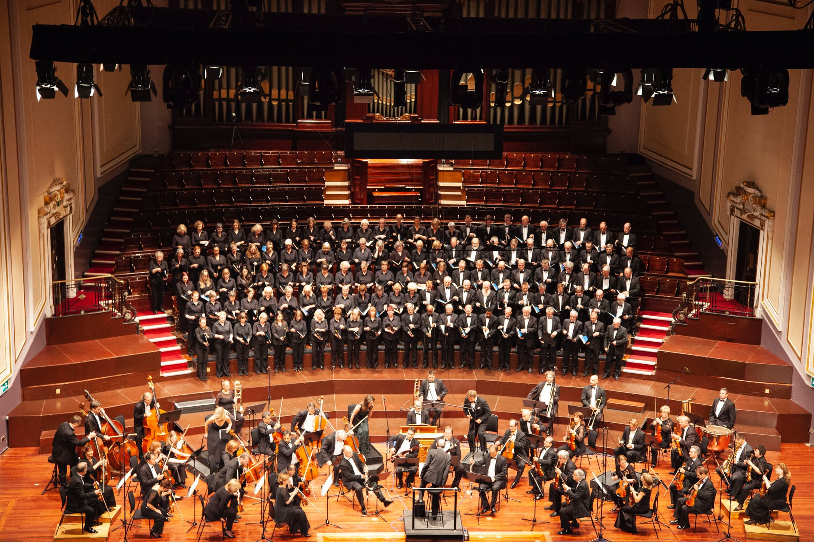
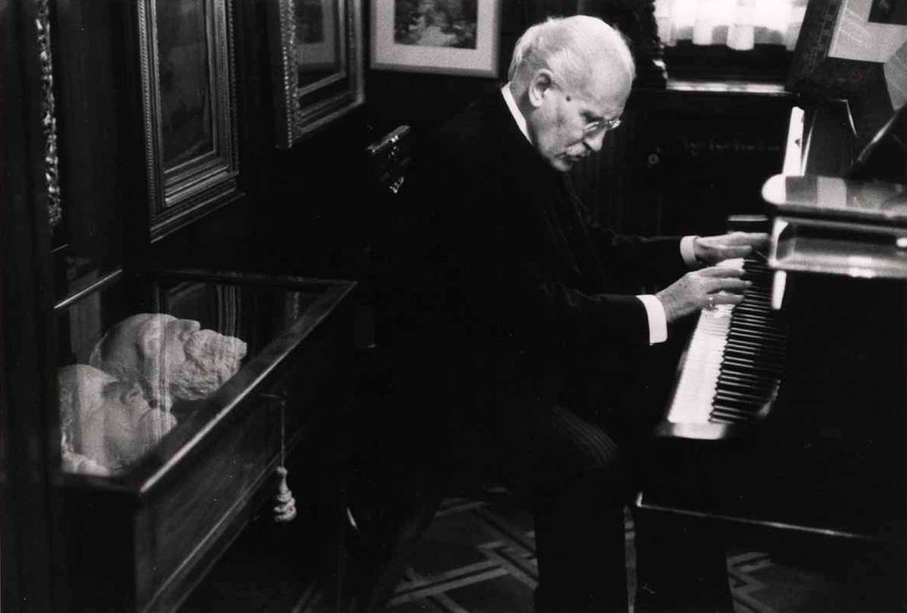

L'istituto
Segreteria Didattica
Segreteria Artistica
Bacheca Docenti
Sezione studente
AVVISI
CONSERVATORIO
"Arturo Toscanini"
STUDIA CON NOI
Benvenuto al conservatorio Arturo Toscanini, e ricorda:
"Nessuno sa qual è il massimo che può raggiungere"

Ascolta dal vivo le nostre orchestre:
Prenota ora il biglietto!
Scopri tutte le attività all'interno del Conservatorio.
Clicca qui!

Ascolta il lavoro dei nostri studenti con i loro Maestri
Visita il canale Youtube!
News, Curiosità e tanto altro sui nostri musicisti.
Corsi base, trienni accademici, bienni specialistici.
Visita lo sportello orientamento!